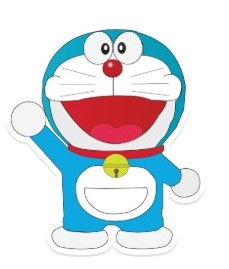
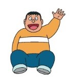
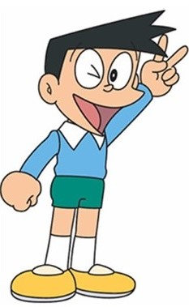

 |
Doraemon: A blue robotic cat from the 22nd century, whose ears were cut off by a rat, so he is very afraid of rats. He loves to eat Dora Cakes. |
 |
Nobita: A lazy boy who struggles with his studies but has a very kind heart; Doraemon has come specifically to help him. |
 |
Shizuka: Nobita's best friend, who is very sensible and smart in her studies. |
 |
Gian: The strongest and most hot-tempered boy in town who loves to sing (even though his voice is terrible). |
 |
Suneo: A wealthy and cunning boy who always boasts about his expensive toys. |
आसमाँ को छू लूँ, तितली बन उड़ूँ... हा हा हा... मैं हूँ एक उड़ता रोबो..... डोरेमोन! |